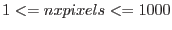
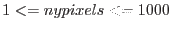
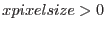
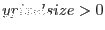
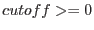

| Parameter | Mand | Type | Default | Constraints |
| evlistset | yes | dataset | `foo.bar' | |
The name of the event list.
|
| xcolumn | no | string | X | |
Name of the column to supply image  coordinate. coordinate.
|
| ycolumn | no | string | Y | |
Name of the column to supply image  coordinate. coordinate.
|
| xrangetype | no | string | maxlegal | `maxlegal'/`maxactual'/`user' |
This controls the cutoff points for values. If xrangetype is set to `maxlegal', the values of TLMINn and TLMAXn are used, where n is the number of the column whose name is given by the xcolumn parameter. A value of xrangetype=`maxactual' dictates that TDMINn and TDMAXn (the true minimum and maximum values of the column entries) should be used instead. If xrangetype=`user', the task looks for user-supplied minimum and maximum values in the parameters xmin and xmax. Events which have values outside the range are discarded.
|
| yrangetype | no | string | maxlegal | `maxlegal'/`maxactual'/`user' |
Similar to xrangetype, but for the coordinate.
|
| imagebinning | no | string | numberofpixels | `numberofpixels'/`pixelsize' |
Controls the way in which the number of and pixels are calculated. If imagebinning=`numberofpixels', the numbers of and pixels are entered directly via the parameters nxpixels and nypixels. On the other hand if imagebinning=`pixelsize', the user must enter the and dimensions of the pixel via the parameters xpixelsize and ypixelsize.
|
| xmin | no | real | -3000.0 | |
When xrangetype is set to `user', this parameter is expected.
|
| xmax | no | real | 3000.0 | |
When xrangetype is set to `user', this parameter is expected.
|
| ymin | no | real | -3000.0 | |
When yrangetype is set to `user', this parameter is expected.
|
| ymax | no | real | 3000.0 | |
When yrangetype is set to `user', this parameter is expected.
|
| nxpixels | no | integer | 600 |
 |
When imagebinning is set to `numberofpixels', this parameter is expected.
|
| nypixels | no | integer | 600 |
 |
When imagebinning is set to `numberofpixels', this parameter is expected.
|
| xpixelsize | no | real | 1.0 |  |
When imagebinning is set to `pixelsize', this parameter is expected.
|
| ypixelsize | no | real | 1.0 |  |
When imagebinning is set to `pixelsize', this parameter is expected.
|
| cutoff | no | integer | 4 |  |
Pixels with fewer events than the value of cutoff are set to zero in the variability image.
|
| withimageset | no | boolean | no | |
This is set if the total flux image should be read (using the name given in parameter imageset) rather than created. Note that, if withimageset=no, the total flux image is created within the task and saved to the name given in parameter imageset.
|
| imageset | no | string | `outimage.ds' | |
Name of the total flux image. If withimageset=yes, the task attempts to read the total flux image from a file of this name. If withimageset=no, the task generates the total flux image internally and saves it to a file of this name.
|
| varimageset | no | string | `outvarimage.ds' | |
The variability image is saved to a file of this name.
|
| sortevlist | no | boolean | yes | |
The algorithm works best if the events are sorted in time. This parameter tells the task to do this sort. The task generates a warning if sortevlist=no and the events are out of time order.
|
| Parameter | Mand | Type | Default | Constraints |